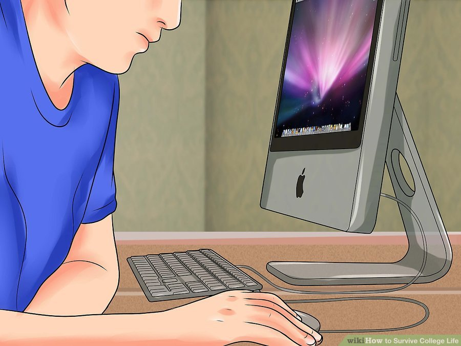
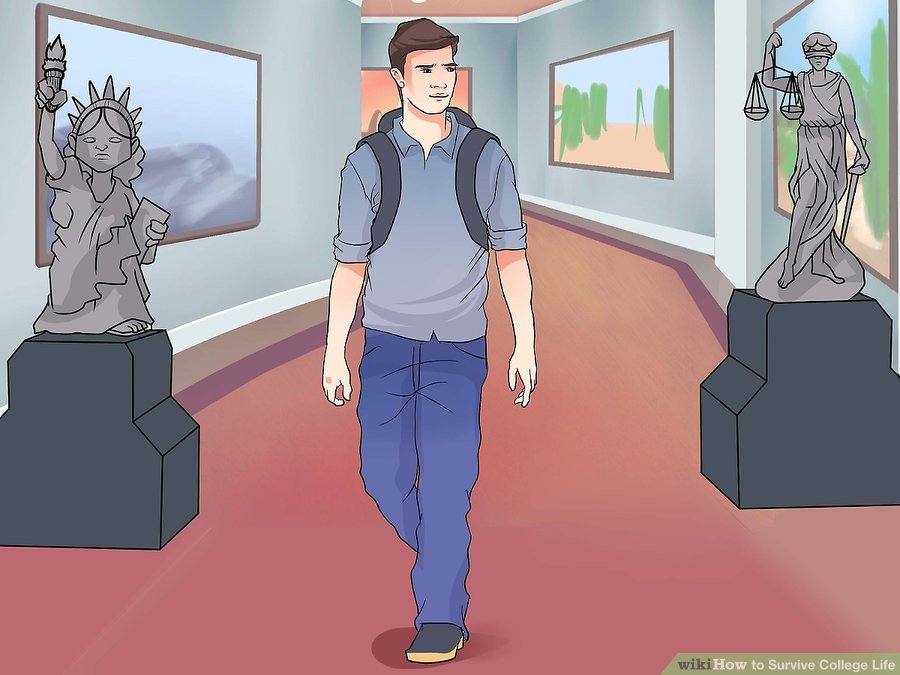
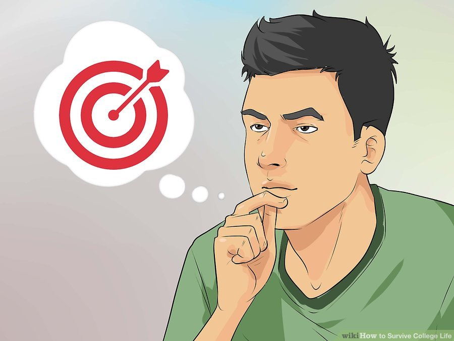
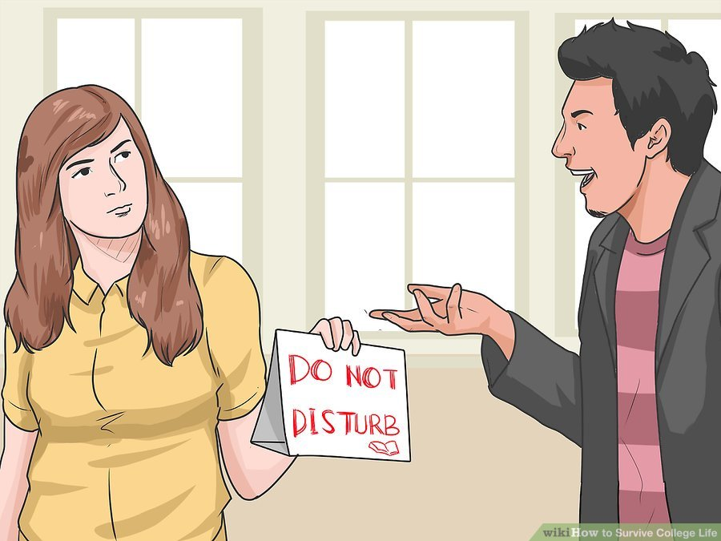
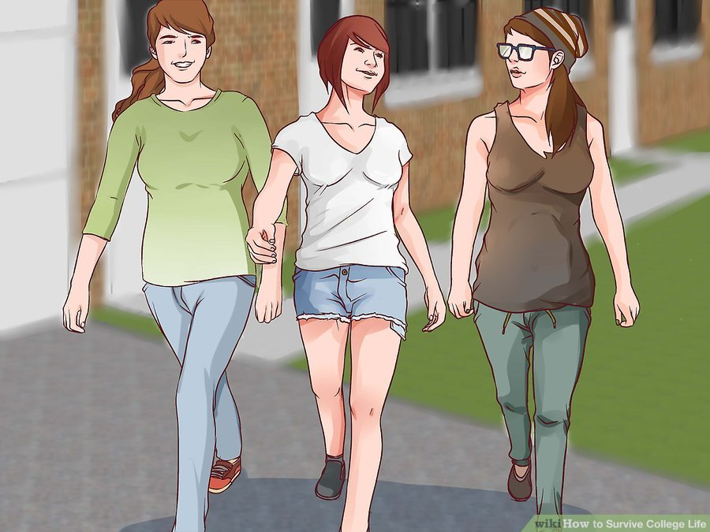
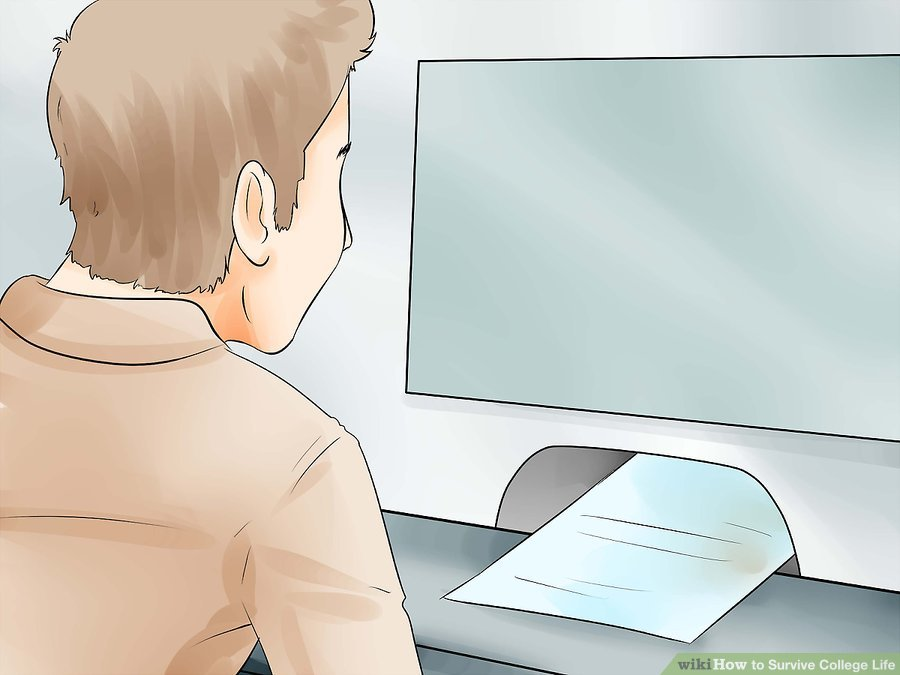
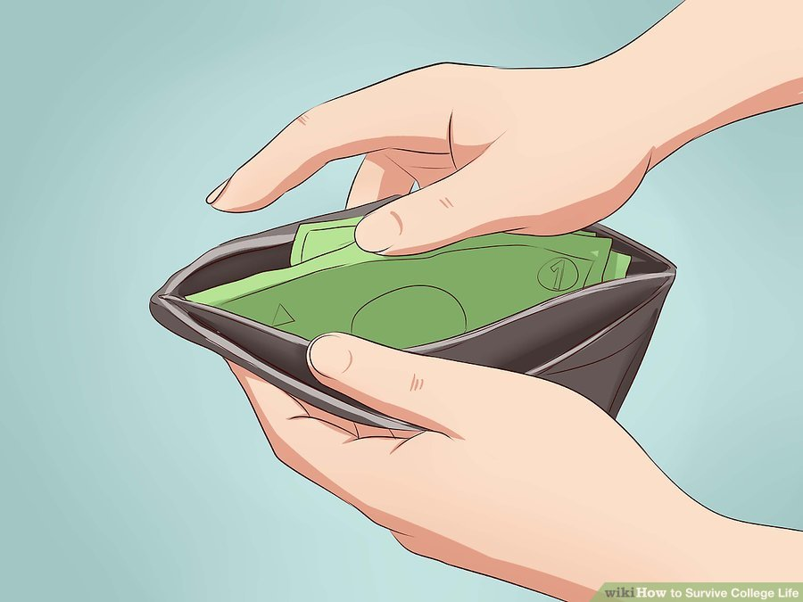
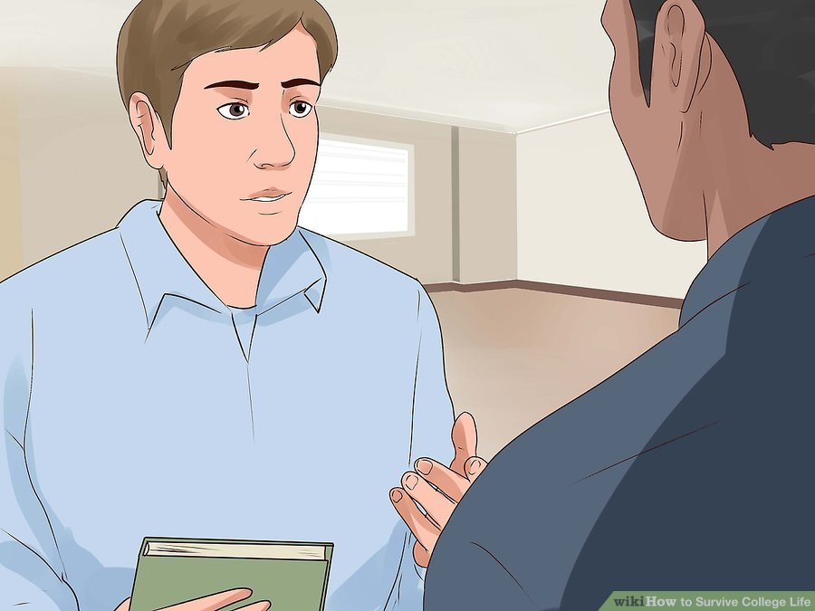
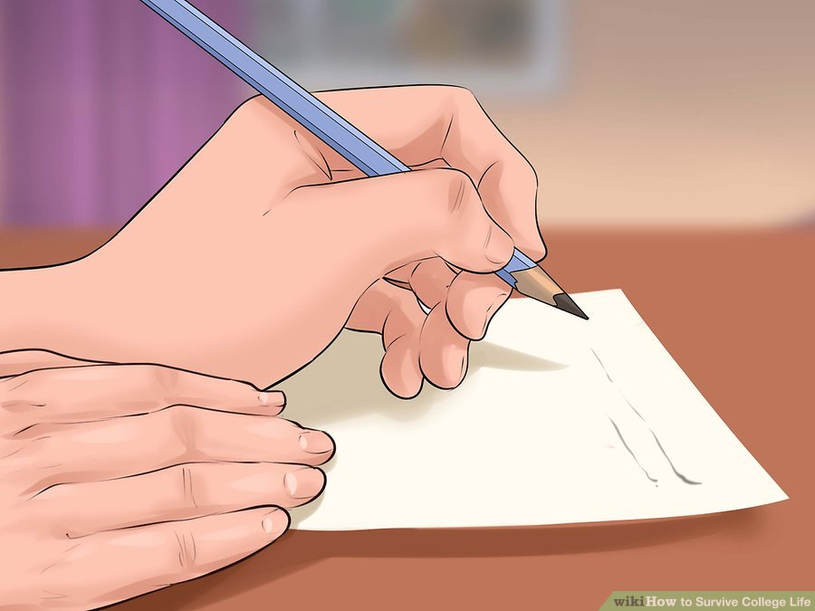
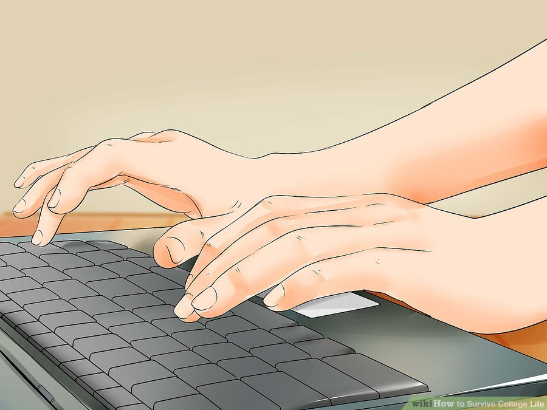

Table of Contents
How to Survive College Life
Part 1: Managing College Academics

- Go to class. In large first-year classes, there might not be anyone taking attendance, which means that you won't get in trouble the same way you may have in high school. This doesnn't mean you shouldn't go to class, though, and some teachers will have an attendance policy. More importantly, skipping class means missing out on valuable learning. Don't make your life more difficult by forcing yourself to cram come exam time. College is also expensive, and not going to class means that you are wasting a lot of your and/or your parents' money, anywhere from $50 to $150 per one hour of class.
- Do the readings, taking notes as you do so. You'll retain much more if you read actively, and your notes will help you out a ton when exam time rolls around.
- Participate if the class calls for it. Many college students hate or are afraid of speaking in front of groups, but you will get so much more out of your classes and will enjoy them so much more if you can get past this. Don't be afraid of being wrong, your professor just wants you to try, and probably wasn't asking a question with a "right" or "wrong" answer to being with.

- Be prepared to devote a lot of time to your schoolwork. You should spend the same amount of time on your schoolwork as you would on a full-time jobb, at least forty hours a week. Bank on spending an average of two hours outside of class for every hour you spend in class. The balance will vary by subject (labs, for instance, will tilt more toward in-class time), but your library or dorm room is where a lot of the really hard work will take place.
- Understand what plagiarism is and how to avoid it. You should spend the same amount of time on your schoolwork as you would on a full-time job, at least forty hours a week. Bank on spending an average of two hours outside of class for every hour you spend in class. The balance will vary by subject (labs, for instance, will tilt more toward in-class time), but your library or dorm room is where a lot of the really hard work will take place.
- Obvious plagiarism includes copying someone else's work and presenting it as your own and using someone else's words or ideas without citing her.
- Not using quotation marks around quotations is also plagiarism, as is giving inaccurate or incorrect information about a source. (It's especially bad if you fabricate a source.)
- Bad paraphrasing is also plagiarism. A paraphrase condenses the "gist" of an idea into your own words. However, you may be plagiarizing if you retain most of the original's words, especially if you use the same basic sentence structure or the passages are substantially similar in length or style.
- Academic dishonesty more generally can include asking people to help you when you have been told to do all your own work, working together on a project if collaboration hasn't been assigned, and paying others to do work for you.

- Get to know your professors. Dirty little secret: many professors sit at their desks during office hours, waiting and hoping for someone, anyone to stop by. They will appreciate you so much if you are that person. If you have a question, this is a great way to ask it because it will help your professor put a name to your face. But consider stopping by early in the semester just to say hi and introduce yourself.
- Be reasonable about your expectations. Your professors won't proofread papers for you or give you essay topics. However, they're usually very happy to talk about your ideas with you to help you figure them out.

- Check your email. For many college students, texting comes more naturally than emailing, but you can't expect your professors to give you their cell phone numbers. If you want to stay on top of your academics, you will need to check your email regularly. This is where you will see announcements from your teachers, department, etc.
- If your courses use online course management, such as Blackboard, check these regularly too. Often, assignments and grades will only be posted here--if you don't check them regularly, you miss out.
- Learn to use the library. This goes for both the physical location and online databases. Your professors will assign a lot of these, especially at the beginning, but you will also need to learn how to do research on your own. Consider scheduling an orientation with a librarian, especially if you have never used a brick-and-mortar library before. You are sure not to be the only one, so don't be embarrassed.
- Most libraries have reference librarians for specific areas, such as hard sciences, music, or English. If you have a big project, it's a good idea to ask for a consultation with the reference librarian in your subject. She stays up to date with all the latest research and can guide you to the best sources.
- Be open to new ideas. No matter who you are, you will probably read things that you don't agree with. This is intentional, your professors aim to assign readings from many different perspectives, so they are assigning things that they don't agree with, either. You don't have to agree with the writers who challenge your beliefs, but do try to figure out where they are coming from and what makes them tick, that's probably part of why they were assigned, anyway.
- Keep track of your progress to degree. Colleges and universities will require that you fulfill a certain number of credits in several different areas: general education (possibly broken down by subject matter), classes for your major, and electives. Meet with your advisor regularly to make sure you are staying on track—otherwise you might find yourself having to pay for a summer session or an extra semester that you weren't planning on.

- Think outside your major. If you are an engineering major, take a literature course. Poets, try biology. (These are just examples.) Either way, you will be exposed to new people, new ideas, and perhaps a new subject that you didn't know you were interested in.
- Employers are often more interested in candidates who can do a wide range of things, such as write a coherent sentence and analyze formulas, rather than people whose focus was so specialized that they can't handle the wide-ranging demands of the modern job market.
Part 2: Managing Your Social Life

- Know the kind of lifestyle you want to lead, and stick to it. For some people, college is first and foremost an opportunity to let loose. For others, academics are the sole priority. Many people are probably somewhere in between. Wherever you stand, there will be others like you. Don't feel pressured to drink or do anything else you don't want to do.
- That being said, remember that college is the time when you learn how to be your own adult. Make choices that line up with your values and make you happy. Remember that sometimes, you and your parents or other authority figures may disagree, and that's okay.

- Learn to live with roomates. Sharing a room is challenging, especially if you have never had to do so before. Start off on the right foot by talking about how the space should be used, and respect those decisions once they are made.
- This includes decisions about both the physical space and behavior. Where do you stand on drinking in the room? Having parties? Hosting overnight guests? Try to hash out an agreement, and consult your Resident Advisor (RA) if you cannot
- If problems come out, communicate your concerns. It doesn't help to be passive aggressive or let things fester. Your roommate is probably not doing things to bother you intentionally, so give them the benefit of the doubt and see if you can work things out.
- Even if you and your roommate get along great, it is a good idea to spend some time apart. Make sure you aren't sticking to them to the exclusion of making other friends.
- Whether you can't stand your roommate or are best friends who are constantly gabbing, you might find it helpful to identity a place outside of your room to study, be it the library or a local coffee shop.
- If all else fails, know that you are learning valuable people skills that will help you deal with difficult individuals in the future.
- If you feel threatened by your roommate or your roommate is engaging in any illegal behavior, talk to your RA. You may be able to switch rooms. At the very least, you will have a record that you reported the activity and weren't a part of it.

- Be safe. College offers new freedoms, but it also introduces new risks. Make sure that your behavior does not harm your health.
- If you are going to drink, do so in moderation, and have a designated driver. Also know your school may have rules against drinking on campus, even if you are legal drinking age.
- College women have probably heard many tips over the years about how to avoid rape and other forms of sexual assault, don't put your drink down, stick to well-lit paths, tell a friend where you are and what time you will be home, etc., but it is important to know that, no matter what behavior you engage in, the sole responsibility for any attack lies with your assailant, and you have a right to pursue legal or other actions. Report attacks to the police, and talk to a counselor about next steps.
- Don't pressure people into doing anything they don't want to do. This applies across the board, drinking, skipping class, sex, you name it. There are no parents looking over your shoulder to punish you, but you are also an adult who needs to take responsibility for your own actions.
- Expose yourself to the diversity of your campus. This will probably end up being the time in your life when you have the most opportunity to learn from people with backgrounds radically different from your own. You are really lucky to have access to this, so take advantage of it.
- Take courses with a multicultural focus. Attend cultural events and lectures on campus. These things will broaden your perspective and help you clarify your own values. Even if you end up holding your own ideas even more firmly, it's good to know where others are coming from.
- Join a club or activity. In addition to having fun, you'll improve your ability to deal with different people, run an organization, etc. You might even find that you use these skills and experiences in your career down the road.
- This advice goes double for transfer or commuter students, who may feel disconnected from campus life.
Part 3: Managing Your Health
- Learn to eat healthily, even in a dorm room. You're busy, surrounded by heavy foods, and on a limited budget, all while taking care of yourself for the first time. In this situation, it can be easy to rely on the choices available in the dining hall, choices that won't always make you feel your best. Take care of yourself so you have the energy you need to fulfill all of your responsibilities.
- Fuel up with breakfast. Not everyone is hungry in the morning, but for those who are, a healthy start to the day will make those early classes easier to face. In the dining hall, look for fiber- or protein-packed foods like whole grain cereal, oatmeal, fresh fruit, yogurt, and eggs. Keep protein bars and non-perishable fruit in your dorm room for those mornings when you're really in a rush.
- Power through the day with lunch and dinner. Sandwiches on whole-grain bread and salads with lean protein will give you the energy you need to get through the day. Watch portion sizes, too, something that's especially hard in an all-you-can-eat cafeteria situation. Large amounts of even healthy foods can make you feel sluggish.
- Stock up on healthy snacks. Even if you don't have a refrigerator or microwave, you can keep whole-wheat bread, some peanut butters, granola bars, apples, bananas, some jerkies, and nuts in your dorm room. If you have access to a refrigerator or microwave, you can expand to milk, yogurt, more fruit, and veggie burgers. Be wary of prepared foods like canned soup and frozen meals, which tend to have a lot of sodium.
- Know that it's all about moderation. With all that you're dealing with, it can be easy to think that that food is the one thing you can control, but it's important to make sure you're not restricting yourself too much. By all means, get the occasional late-night slice of pizza with your friends. If you think that your thoughts or behaviors are sliding into dangerous territory, talk to your counseling center about eating disorder support.
- Deal with stress through excercise. Regular exercise is one of the best ways to manage the stress that you are dealing with as a college student. You might think that you are too tired or do not have time to fit this in, but it will give you so much more energy that it will be more than worth it. Your school will probably have a gym that you have access to free of charge.
- Know when to go. Especially if you are a beginner, a crowded gym can be intimidating. It will be busiest at the beginning of each semester, in the morning, and in the evening. If you can, ease yourself in by going at off hours.
- Consider a session with a trainer. Trainers at college gyms are usually fellow students who can evaluate your fitness level and recommend an exercise plan.
- Expose yourself to new forms of exercise. Your gym will probably offer classes in everything from aerobics to Zumba. Hold yourself accountable by signing up with a friend.
- Take care of your mental health. As a college student, you may find yourself dealing in new ways with depression, anxiety, eating disorders, substance abuse, relationship issues, and more. Your school's health center will offer many resources to help you thrive in spite of these challenges. Don't hesitate to take advantage of these resources.
- Many schools will offer confidential counseling sessions with a licensed practitioner or graduate student, often free of charge for a certain number of sessions.
- You are also likely to find support groups, especially those that deal with issues common to college students.
- If you are in crisis, call 911 or contact the National Suicide Prevention Lifeline (1-800-273-8255) immediately.
Part 4: Managing Your Finances

- Take on only asmuch debt as you absolutely need. You can get a great education anywhere, so consider whether your dream school is really worth it. You might regret it a few years down the road, when you can't afford to take on a cool internship, go to graduate school, or live where you want because your student loan payments take up such a big chunk of your monthly budget
- If you do have to borrow, exhaust your Federal financial aid before taking out any private student loans. Federal student loans have lower interest rates, more forgiving repayment plans, and subsidized loans even pay for the interest while you're enrolled in school.
- Use credit wisely. Part of college is learning to adopt adult responsibilities, and building a good credit history is part of that. It's often a good idea to apply for a student credit card to help you build your credit history. This way, when you graduate you'll have a decent history and a good credit score to help you find an apartment or auto loan.
- Don't consider this a blank check to spend whatever you want. You still need to have a budget and keep to it.
- Don't charge more than you can afford to pay off at the end of the month. This way, you'll avoid accruing interest on your purchases, and you'll be less likely to blow a few hundred bucks on something fun but frivolous.
- Some student-oriented credit cards, like the Discover It card, even offer rewards for good grades. Every little bit helps!
- Consider a part-time job. Yes, it's one more responsibility eating away at your time, but social activities cost money. Many students, of course, are contributing to or paying for all of their tuition. Look into work-study jobs that are designed for students and may offer more flexibility.

- Stretch your dollar. Take advantage of the fact that you are on a college campus. In addition to sports games, you will find readings, plays, and many other activities on campus, often at a cheaper student rate. Some local businesses will also give you a discount for being a student.
- Calculate your food spending. Depending on how much you eat and how easy it is for you to cook where you live, you may benefit from purchasing a college meal plan. Most meal plans will give you a daily or per-meal cost. Have a look at your weekly grocery budget and figure out whether it's cheaper to eat most of your meals in the cafeteria or cook more.
- If you have a scholarship that includes a meal plan, maximize your money by eating as many meals on-campus as you can. That'll give you more money for books or even the occasional splurge.
Part 5: Getting Help if You Need It

- Get help in classes you are struggling with immediatly. Most professors love helping students, so don't be afraid to approach them for help. Don't wait until the end of the semester, though. By that point, your grades may have suffered beyond repair, and your teachers will be busy with end-of-the-semester responsibilities.
- Keep in mind that extra credit is rarely a part of college classes. Every assignment counts.
- If you find that extreme mitigating circumstances make it impossible to complete an assignment on time, contact your professor before the due date. They would much rather have you ask for an extension than explain why you didn't turn something in.

- Visit the writing center. One of college professors' greatest concerns is that their students don't have strong enough writing skills to succeed. If you are the exception to this trend, you will shine in their eyes. Many schools offer writing centers to help you through tricky assignments.
- Make sure you are familiar not only with spelling, grammar, punctuation, etc., but also what different subjects expect in terms of paper structure and citation style.
- Consider visiting the writing center even if you are a competent writer. Everyone can benefit from having a second set of eyes read their writing and suggest improvements.

- Register with your school's disability support system. Colleges and universities offer accommodations to students who require them for both physical and mental reasons. Accommodations can include changes to how you take tests, turn in assignments, and more. However, you will have to be proactive to secure these accommodations for yourself.
- Remember that though your professors are experts in the subjects that they teach, they are neither qualified nor appropriately positioned to determine what kind of accommodations individual students need. If you approach them at the end of the semester to tell them that mental illness interfered with your schoolwork, they will likely be sympathetic, but they will not be able to help you.
- Instead, approach your school's disability support system as early as possible. You will probably need certification from a mental health professional before accommodations can be made.
- Your professors will not know what your diagnosis is, they will just see the changes you need so that you can succeed (more time on exams, a flexible attendance policy, etc.).